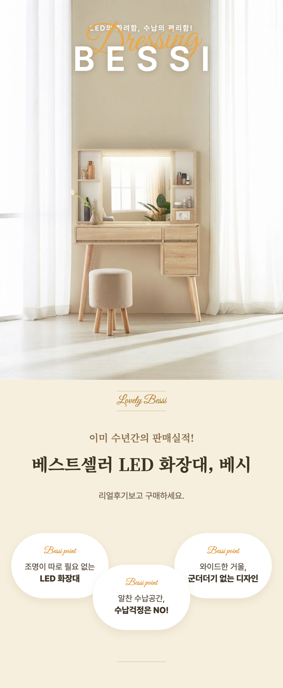
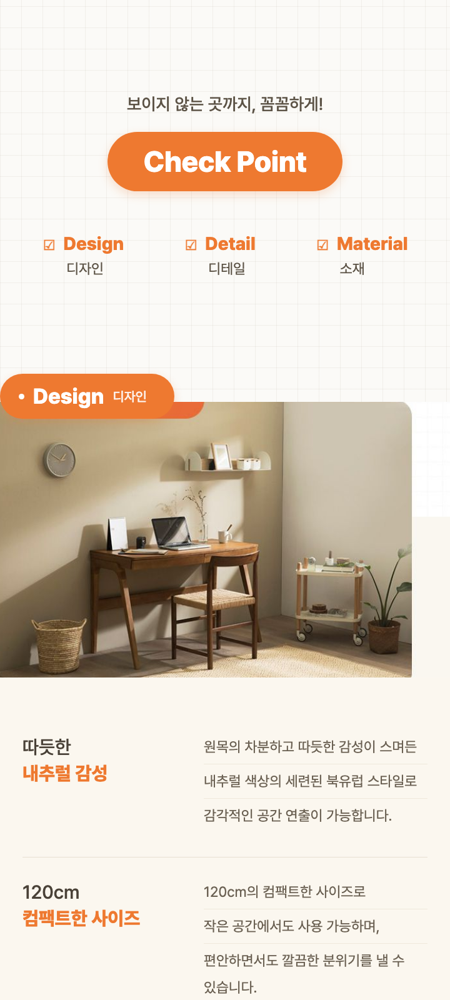

레퍼런스 상세페이지를 섹션별로 CSS 충실 재현 — 원본(좌) vs 재현(우)으로 평가. 2026-07-03
CASE 1 — ref_09 화장대 BESSI (감성 크림톤)
섹션 3개: ① 씬+BESSI/필기체 겹침 히어로 (씬은 nb-lite로 무텍스트 재생성) ② 크림 밴드+명조 세리프 헤드+필기체 디바이더 ③ 흰 블롭 포인트 3개 지그재그
원본
재현 (HTML/CSS + i2i 씬)
재현 요소: Noto Serif KR(명조 헤드) · Great Vibes(필기체 Dressing/Lovely Bessi/Bessi point) · letterspaced BESSI · 필기체-대형타이포 오버랩 · 상하 가는선 디바이더 · 블롭 pill 지그재그(가운데만 아래 오프셋) · 2줄째만 볼드.
CASE 2 — ref_04 가구 Check Point (오렌지 포인트)
섹션 2개: ① 모눈 배경+Check Point pill+체크 3컬럼 인덱스 ② Design pill 라벨(이미지에 걸침)+풀폭 사진+키워드|설명 3행(행별 가는 밑선)
원본
재현 (HTML/CSS)
재현 요소: 모눈 그리드 배경(repeating-linear-gradient) · 오렌지 pill 대소 2종 · pill의 이미지 오버랩(음수 마진) · 키워드 2줄(2줄째 오렌지 볼드) | 설명 행별 밑선 · 크림 하프 배경 전환.